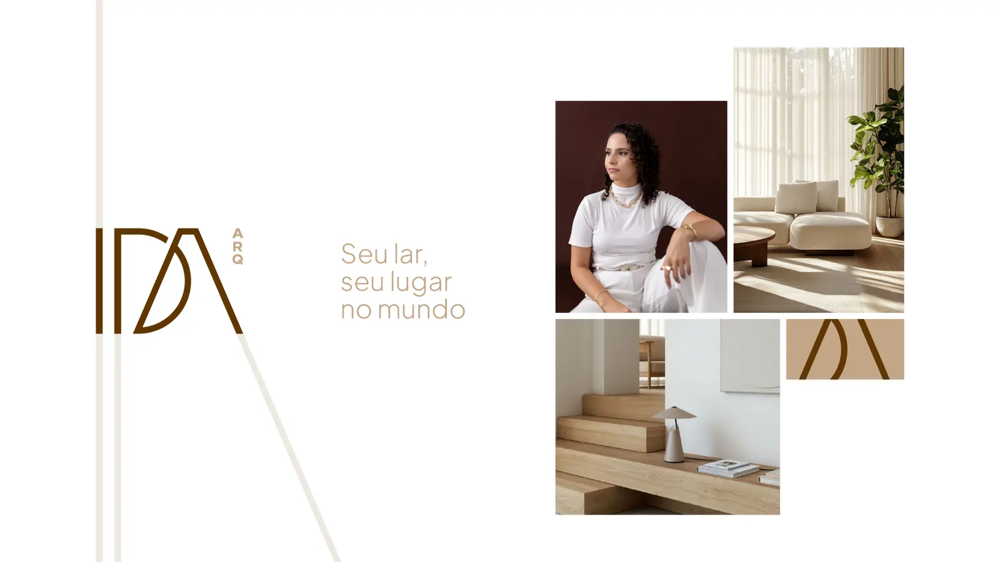
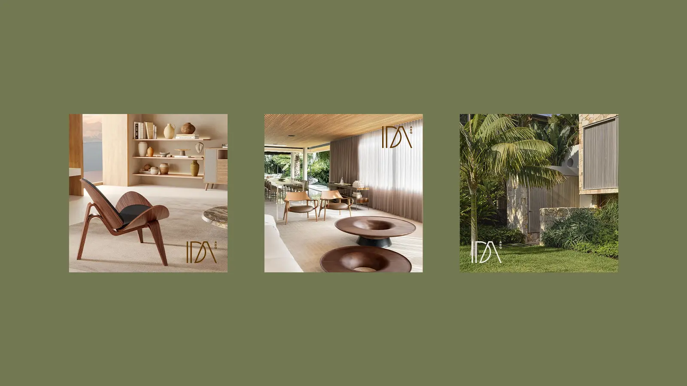
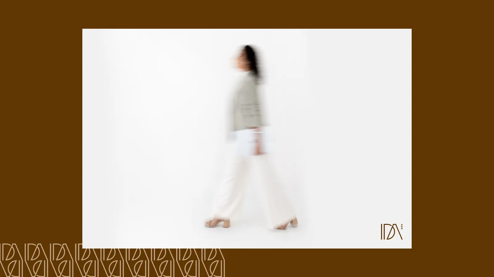
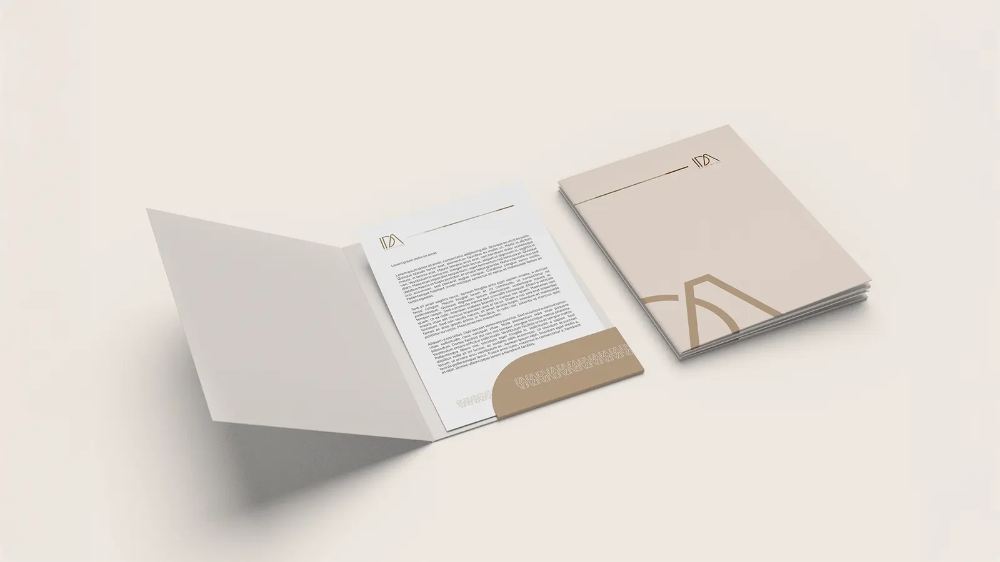

Arquitetura
IDA Arquitetura

O projeto da IDA Arquitetura nasceu do equilíbrio entre proximidade e sofisticação, traduzindo visualmente o diferencial do escritório liderado pela arquiteta Idalielle Cassinelli.
A proposta vai além do convencional ao criar uma experiência acolhedora e conectada desde o primeiro contato. O logotipo tipográfico foi desenhado à mão, garantindo uma assinatura única, humana e reconhecível.





